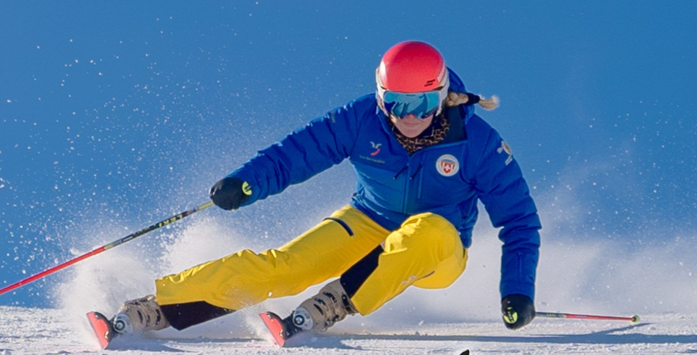

Corsi 2025 – 2026
Corsi collettivi, lezioni private, snowboard e sci di fondo. Prenota e paga online: risparmi CHF 10.–.
Corsi collettivi
Le lezioni vengono svolte nell'area sciistica di Confin e Pian Cales. Nel prezzo del corso sono comprese la medaglia Swiss Snow League (eventuale libretto CHF 5.–, gratuito per chi partecipa per la prima volta) e le gare di fine corso.
Snowli Club
Per coloro che non hanno mai sciato o sono alle prime esperienze sulla neve. Con Snowli e i suoi amici, ogni giorno è un'avventura da ricordare!
Minimo 4 allievi per classe, 2 ore/giorno; meno di 4 allievi lezioni private.
Mattino 9.45 – 11.45
Livelli: Swiss Snow Kids Village · Blue Prince/Princess
Sci Ragazzi
Acquisirete le basi per sciare in sicurezza su piste blu e rosse, affrontando discese con curve parallele dinamiche e controllate.
Minimo 6 allievi per classe 3 ore/giorno; 4/5 allievi 2 ore/giorno; meno di 4 allievi lezioni private.
Mattino 9.45 – 12.45
Livelli: Blue King/Queen · Blue Star · Red Prince/Princess · Red King/Queen
Academy Club
Preparazione alla Swiss Snow Academy, caratterizzata dallo sci senza limiti: in pista, fuori pista, nello snowpark e tra le porte.
Divertimento e tante emozioni. Minimo 6 allievi per classe 3 ore/giorno; 4/5 allievi 2 ore/giorno.
Mattino 9.45 – 12.45
Livelli: Red Star · Black Prince/Princess · Academy
Pian CalesRitrovo ore 9.40 — Baby lift Campana
ConfinRitrovo ore 9.30 — Frach partenza cabine
5 giorni consecutivi
- Natalevenerdì – martedì
- Capodannogiovedì – lunedì · 01.01. ritrovo 13:00
- Carnevalelunedì – venerdì
- Febbraio — corsi settimanalilunedì – venerdì
Snowli Club · Sci Ragazzi · Academy Club
Skipass impianti di risalita esclusi. Snowli Club 2 ore (9.45–11.45), Sci Ragazzi e Academy 3 ore (9.45–12.45).
Iscriviti5 domeniche
- Domenicale 15 × domenica
- Domenicale 25 × domenica
Pian Cales, ritrovo ore 9.40 — Baby lift Campana. Snowli Club 9.45–11.45, Sci Ragazzi 9.45–12.45.
Skipass impianti di risalita esclusi.
IscrivitiWeekend — 2 giorni
Snowli Club e Sci Ragazzi, sabato e domenica mattina 9.45 – 11.45 (2 ore, tot. 4 ore).
- Dicembre
- Gennaio
- Febbraio
- Marzo
Pian Cales ritrovo 9.40 Baby lift Campana · Confin ritrovo 9.30 Frach partenza cabine. Skipass esclusi.
IscrivitiCorso del sabato — 4 giorni
Academy Club · 4 sabati pomeriggio, 13.00 – 15.30 (2.5 ore)
- 4 sabati pomeriggioConfin · ritrovo 12.45 Frach partenza cabine
Skipass impianti di risalita esclusi.
Iscriviti


Lezioni private
Quotidianamente, durante la stagione, impartiamo lezioni private a San Bernardino e a Splügen dalle 09:00 alle 16:00, da prenotare in anticipo. L'orario delle lezioni può variare a dipendenza della disponibilità dei maestri. Eventuale annullamento delle lezioni private da effettuare 48 ore prima.
| Tariffa (abbonamento impianti e piste di fondo esclusi) | CHF |
|---|---|
| 1 lezione (55 min.), 1 persona | 80.– |
| 1 doppia lezione (115 min.), 1 persona | 160.– |
| 2 o 3 persone in più (max 3) pagano all'ora | 10.– |
| Premio fedeltà, dopo 10 lezioni | 1 gratuita |
| Cabinovia — accompagnatori ragazzi in Confin 2000 | 10.– |
Skipass 50%. Al momento dell'acquisto dello skipass, dichiarando di frequentare una lezione con la nostra scuola e mostrando la conferma della prenotazione, si ottiene una riduzione del 50% sul prezzo dello skipass.
Punti di ritrovo
Pian CalesBaby lift Campana
ConfinStazione partenza cabine
Confin 2000Di fronte al ristorante
SplügenStazione partenza cabine
Sci di fondo — FornasCassa pista sci di fondo


Snowboard
Imparando le prime curve e i primi trucchi, potrai fare snowboard padroneggiando le piste e lo snowpark in modo sicuro e dinamico.
Corsi collettivi 5 giorni per ragazzi principianti a partire dai 6 anni. Minimo 4 allievi per classe 2 ore/giorno, mattino 9.45 – 11.45; meno di 4 allievi lezioni private. Livelli Swiss Snow Kids Village – Blue – Red.
- Natalevenerdì – martedì
- Capodannogiovedì – lunedì · 01.01. ritrovo 13:00
- Carnevalelunedì – venerdì
Pian Cales, ritrovo ore 9.40 — Baby lift Campana. Skipass esclusi. Lezioni private alle stesse tariffe dello sci.

Sci di fondo
Lo sci di fondo è libertà: vivere la natura, respirare aria pura e lasciarsi scivolare nella quiete dell'inverno.
Scopri il piacere di scivolare senza sforzo sulle piste da fondo! Offriamo corsi per principianti, ideali per muovere i primi passi con la tecnica classica, e lezioni avanzate per perfezionare lo skating. Lo sci di fondo è uno sport adatto a grandi e piccini: una disciplina completa che unisce tecnica, resistenza e forza, regalando benessere al corpo e alla mente.
San Bernardino FornasCassa pista sci di fondo
San Bernardino paesePonte Ostello S. B.
| Lezioni private (abbonamento piste di fondo escluso) | CHF |
|---|---|
| 1 lezione (55 min.), 1 persona | 80.– |
| 1 doppia lezione (115 min.), 1 persona | 160.– |
| 2 o 3 persone in più (max 3) pagano all'ora | 10.– |
| Premio fedeltà, dopo 10 lezioni | 1 gratuita |

I livelli
La scoperta degli sport sulla neve suddivisa nei livelli Swiss Snow League e Swiss Snow Academy.
Trasforma la passione in una professione
Vuoi condividere l'emozione di sciare su pendii innevati o esplorare foreste immacolate con gli sci di fondo? Lasciati consigliare e affidati all'esperienza dei nostri maestri.
Andrea Alli
- Maestro di sport sulla neve con attestato professionale federale (APF)
- Master of Science in Sport Sciences and Motor Control, University of Fribourg
- Master of Arts in Secondary Education, University of Geneva
Viviana Mari Toscano
- Maestra di sport sulla neve con attestato professionale federale (APF)
- Bachelor of Science in Physiotherapie (SUPSI)
Martina Toscano
- Maestra di sport sulla neve con attestato professionale federale (APF)
- Esperta per la formazione — Campionessa Svizzera Maestri di Sci 2024
- Bachelor of Arts (PHGR) — Master of Science in Secondary Education (PHSG)
Pronti a scendere in pista?
Riserva il tuo corso online o contattaci: info@scisanbernardino.ch · +41 91 832 13 44